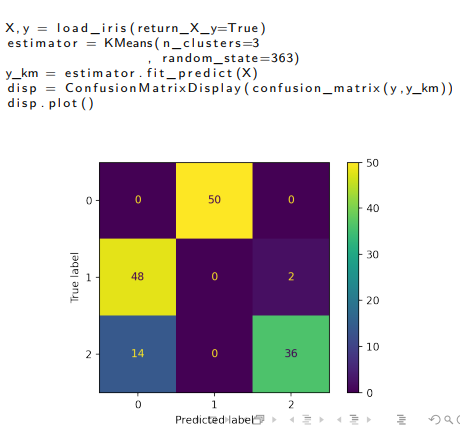

Gold standard
It is a supervised technique to evaluate a Clustering scheme. We may have a set of data with some label already computed (in this case, the label works as clusters names). We can use the clustering scheme we have computed to label the data and compare the actual label against the cluster label. Sometimes it could be necessary a permutation of the labels' names in order to match the clustering ones.  In this case a rename of 0 to 1 and to 1 to 0 is necessary but, in general, the clustering process was successfull.
Some measures
is the clustering scheme and is the gold standard. We can label any pair of objects as:
- SGSK if they belong in the same scheme both in and
- SGDK if they belong in the same scheme in but not in
- DGSK if they belong in the same scheme in but not in
- DGDK if they belong in different schemes both in and
Rand score = Jaccard coefficient is the same but computed only in one label.